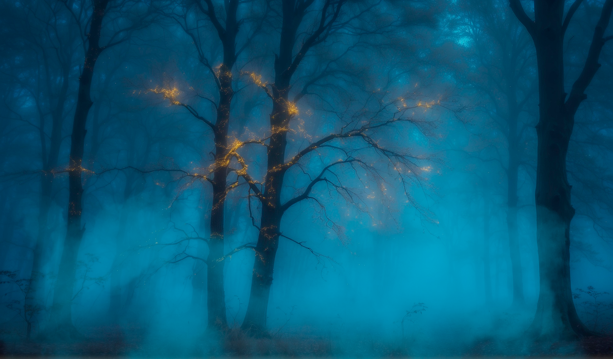

Концепт-документ
Ведение нарративной документации – важнейшая часть работы игрового сценариста.
The Lost Forest
Жанр: Visual novel with puzzle elements
Концепция
Игроку предстоит определить жизненный путь героини, потерявшейся в загробном мире. Сюрреалистичные образы на грани сна и реальности порой выбиваются из стройной цепочки событий, связанных логикой, но никогда не лишены смысла. Стоит лишь приглядеться – и сущая нелепица обернется головоломкой, которую игроку предстоит разгадать.
В зависимости от выборов игрока будет меняться как характер героини, так и окружающий мир. А ожившие герои азиатских мифов и золотое сияние, всякий раз сопровождающее игрока на пути к разгадке, сделают приключение еще более увлекательным.
Персонажи
Рейвен
Рейвен – главная героиня, попавшая в загробный мир по обстоятельствам, которые игроку предстоит выяснить в процессе прохождения игры. Впервые появляется в облике человека, постепенно превращающегося в они – демона, которым, согласно легендам, может стать человек, не контролирующий свой гнев.
Биография: До начала событий игры Рейвен была обычной девушкой, родившейся в небогатой семье. Когда из-за нехватки денег на лечение умерла от болезни её сестра, отец признался, что причина их бедственного положения всегда заключалась в его пристрастии к азартным играм. Не выдержав горя, мать Рейвен накладывает на себя руки, и Рейвен, виня во всех проблемах отца, убивает его, а затем следует примеру матери. Приходит в себя она на опушке леса, обнаружив на теле первые признаки обращения в они.
Внешность: В самом начале пути от человека Рейвен отличают только появившиеся рога, которые растут по мере прохождения. Цвет кожи меняется в зависимости от прокачки героя: красный при выборе “Пути гнева” и синий – в случае прохождения по “Пути здравомыслия”.
Отец
Отец – одновременно антагонист и призрак для главной героини. Тот, чей образ преследует её в течение всего пути и воплощает всё худшее в ней.
Биография: Не справившись с игровой зависимостью, он поставил на кон доверие и жизни близких. Когда из-за долгов он оставил умирать без лечения свою дочь, его супруга не выдержала и наложила на себя руки, а оставшаяся последней в живых старшая дочь по имени Рейвен отказалась давать ему второй шанс и заколола ударом ножа.
Внешность: Классический образ демона они из японского фольклора.
Хоонадэ
Хоонадэ – переосмысленный образ духа, в оригинальном фольклоре представляющего собой руки, ласкающие путников в ночи и не приносящие им никакого вреда. В рамках новеллы воплощает собой одновременно психопомпа и мать для героини.
Биография: Происхождение Хоонадэ остается доподлинно неизвестным. Она древнейший дух леса, направляющий только покинувшие мир живых души на истинный путь и помогающий упокоиться. Является первым встреченным персонажем и источником всех игровых квестов.
Внешность: Главный признак её присутствия – золотая пыльца, парящая в воздухе. Больше всего этой пыльце в пещере – основном месте обитания Хоонадэ. Сама Хоонадэ представляет собой призрачную женскую голову с макияжем гейши, сплетенную из золотой пыльцы. Голова держится на золотых нитях-сосудах, оплетающих все своды пещеры.

Кумихо
Кумихо – наиболее жестокая вариация лисиц-оборотней среди всех их подвидов в азиатской культуре. Воплощает коварство и бесчеловечность, во время прохождения ее загадки будет всячески пытаться убедить героиню поддаться азарту и сеять ложь.
Биография: Утопившаяся блудница, попавшая в загробный мир в облике кумихо. При жизни обманывала мужчин и промышляла каннибализмом.
Внешность: Невиданной красоты девушка в кимоно с лисьими хвостами. В момент встречи с Рейвен лицо ее перепачкано кровью, что свидетельствует о характерном для мифов поедании людских сердец.
Райдзю
Райдзю – воплощение гнева самой природы, стремительный удар молнии и неумолимая кара. Воплощает страх героини перед карой за содеянное. Во время решения загадки в пупок героини уляжется крохотный грозовой зверек, возвещая о скором ударе молнии в случае задержки с решением головоломки.
Биография: В отличие от многих персонажей Райдзю никогда не была человеком и не умирала. Она порождение небес и раскатов грома.
Внешность: Синекожая великанша, восседающая на грозовой туче. Там, где она появляется, бьют тысячи молний, а по ее рукам бегают крошечные грозовые зверьки.
Тэнгу
Тэнгу – воплощение мудрости и справедливости. Выступая обличителем, воплощает чувство вины героини.
Биография: При жизни был славным воином, защитником слабых и обездоленных, но так и не сумел упокоиться из-за осознания несправедливости мира.
Внешность: Молодой воин в звериной маске.
Юрэй
Юрэй – персонаж-союзник, такая же неупокоенная душа, как и сама Рейвен.
Биография: Погибший в результате несчастного случая парень, потерявшийся в лесу точно так же, как Рейвен. В течение сюжета обретет покой первым, одновременно лишив Рейвен союзника и подарив ей надежду на то, что и ей удастся добиться того же.
Внешность: Юноша-призрак в белом кимоно, под подолом которого нет ног. Из-за этой особенности Юрэй передвигается с помощью левитации, а не ходьбы